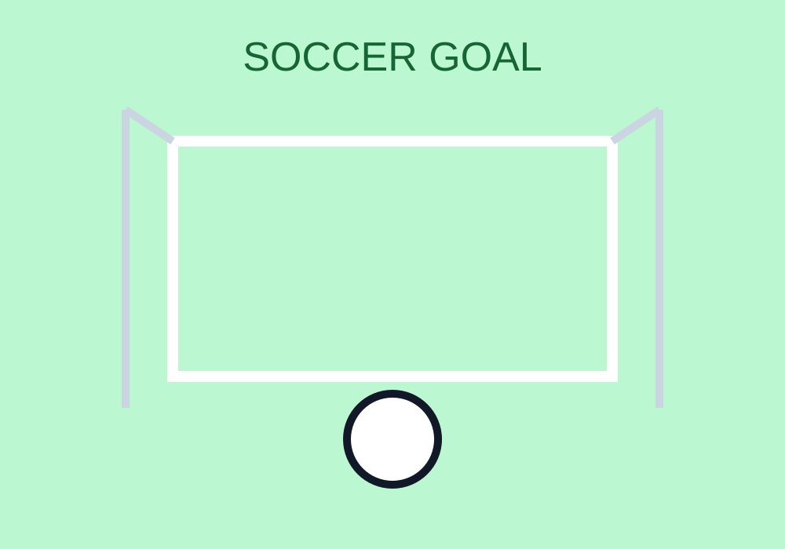

Ball Control
Practice touches with both feet so you can stay calm under pressure.
Final Project Website
Soccer players need technical skill and endurance. Passing, dribbling, defending, and shooting all matter, but they work best when players understand spacing and timing.
Good teams move the ball quickly and communicate often. Even strong individual players must support the whole team structure to win games consistently.

Practice touches with both feet so you can stay calm under pressure.
Short and long passes must be precise to keep possession and create chances.
Soccer requires repeated sprinting, recovery, and good overall conditioning.